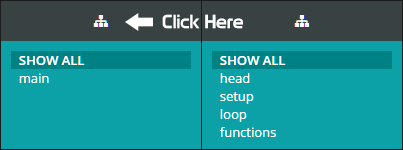

This is an external editor for the Arduino IDE. You will still use the Arduino IDE to select boards files, upload, and connect with the serial monitor. The only thing this does is makes it easier to write the code for Arduino.
You can get additional help, including documentation and updates, on our website. https://oshlab.com/arduinoeditor/
To use with the Arduino IDE, you need to enable the external editor. Open the file (or create and save one) you want to work with in the Arduino IDE. Open File -> Preferences. Check Use external editor.
Now you just need to open the file in this editor. When you make changes here, you will see those changes in Arduino. You can compile, upload, and use the serial monitor just like you would normally.
Alt-S - Splits files based on Virtual File tags
Alt-F - Insert Virtual File tag
The External Arduino Editor works with virtual files. There is no need for header files or c / c++ files. The files are split up virtually but remain a single Arduino INO file.
Now you can fill your file with virtual file tags. The tags look like this //{{yourFileName}}
A tag must be at the top. Everything after the virtual file tag will be placed in a new virtual file all the way to the end, unless a new virtual file tag is found. When you are done with your tags, click the split file button to generate the virtual files.
